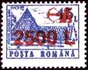
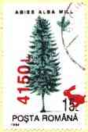

|
 The
results of the bad politics of the former communist leaders and of some
of their later followers can still be perceived also on more recent stamps.
Take as an example the stamp displayed on the left (Dacilor Lodge,
Brasov, Scott 4219). True, it may look better in the overprinted
version of 1998 than the original of 1991, but notice the inflation
rate of over 5500%, and the quite suggestive image of the archer who
tries, unsuccessfully, to hide the old value. My only objection to the
design of the overprint is that the archer should be pointing much
higher than the roof! |
|
 In
the Feb. 1999 edition of Scott Stamp Monthly, the stamp above appeared
with the very appropriate caption: "Stamps that need all the help they
can get". (p. 107). Another example (on the right) is the stamp Abies Alba, issued in
1994 and then overprinted, where the red overprinted rabbit makes a
jump from 15L to 4150L (a 27700% increase, or over 5000% per year).
Here the rabbit could eventually be replaced by a hawk.
I present below an interesting combination of Romanian
stamps, received on a postcard. |
|
The
Airbus A-310 stamp was issued in 1994 and was then overprinted with a
dirigible airship, possible in the hope of slowing down the
inflation. |
Notice that the postcard took 5 days to travel from Azuga to Bucharest
(130 Km or 78 miles) and other 5 days from Bucharest to Switzerland (about
1500 Km). The first part of the travel was eventually made on the
board of a really very slow airship... |
|
Rezultatele politicii nefaste
a
foştilor lideri comunişti şi a unora dintre urmaşii lor pot fi percepute
până şi pe timbrele relativ recente. Luaţi ca exemplu Şura Dacilor, Braşov,
Scott 4219, prezentat în stânga. Este adevărat, el poate că arată mai bine
în versiunea sa supratipărită din 1998 decât originalul din 1999, dar notaţi
rata de inflaţie de peste 5500% şi imaginea destul de sugestivă a arcaşului
care încearcă, fără mult succes, să ascundă vechea valoare. Singura mea
observaţie referitoare la designul supratiparului este că arcaşul ar fi
trebuit să ţintească mult deasupra acoperişului. |
|
În ediţia din Februarie 1999,
p.177, a catalogului american Scott Stamp Monthly, timbrul din stanga sus a
aparut subtitrat "Timbre care au nevoie de tot ajutorul posibil pe care îl
pot primi. Un alt exemplu este timbrul Abies Alba, apărut în
1994 şi apoi supratipărit, în care iepurele roşu al supratiparului face un
salt de la 15L la 4150L (o creştere de 27700%, adică de 5000% pe an).
În acest caz iepurele s-ar fi cuvenit să fie înlocuit cu un vultur. Mai jos
vă prezint o combinaţie interesantă, primită pe o carte poştală.
|
|
Timbrul
Airbus A-310 a fost emis în 1994 şi a fost apoi supratipărit cu un dirijabil,
poate în speranţa să frâneze inflaţia. Steagul european aminteşte poate că
aceasta a fost o precondiţie pentru aderarea la EU.
Notă:
versiunea în limba română a acestei pagini a fost creată pentru EFIRO 2008. |
Cartea
poştală a călătorit 5 zile de la Azuga la Bucureşti (120 Km) şi alte 5 zile
de la Bucureşti câtre destinaţia finală Elveţia (circa 1500 Km). Prima parte
a drumului a fost probabil efectuată pe un dirijabil care a avut de
înfruntat în permanenţă un vânt potrivnic... http://www.marci-postale.com |